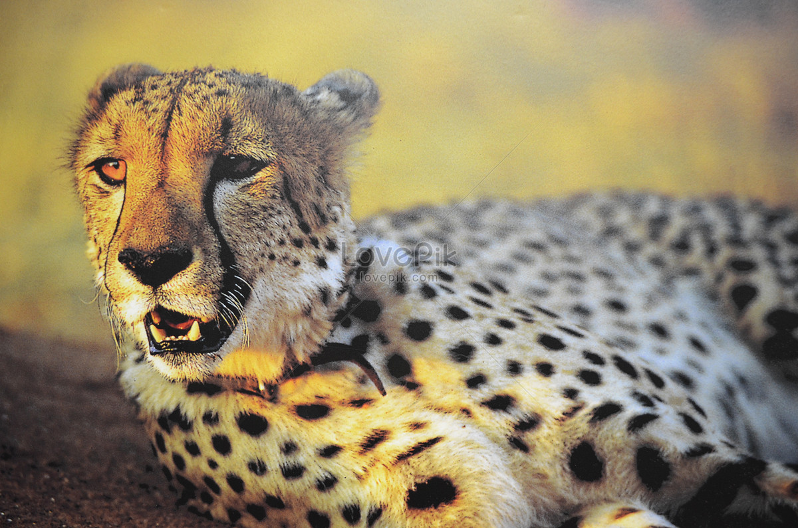

- Tên: Báo đốm châu Âu (danh pháp hai phần: Panthera (onca) gombaszoegensis) đã sinh sống khoảng 1,5 triệu năm trước, và là loài Panthera được biết đến sớm nhất từ châu Âu. Hóa thạch đầu tiên được biết đến từ địa điểm Olivola ở Ý và theo từ đồng nghĩa Panthera toscana từ các địa phương khác Ý. Sau đó, các mẫu vật đã được tìm thấy ở Anh, Đức, Tây Ban Nha, Pháp và Hà Lan. Đôi khi nó được công nhận là một phân loài Panthera onca, báo đốm[1].
- Giới thiệu: Báo đốm châu Âu báo đốm Mỹ lớn hơn so với những con được tìm thấy ở Nam Mỹ, và do đó có thể có khả năng bắt con mồi lớn hơn. Một hình thức tương tự như Panthera gombaszoegensis đã được tìm thấy có niên đại từ đầu Pleistocene Đông Phi và có cả hai nhân vật sư tử và hổ.
- Báo đốm châu Âu có thể là một động vật đơn độc. Người ta thường cho rằng chúng là một con mèo sống trong rừng, với những thói quen tương tự như báo đốm hiện đại, mặc dù nghiên cứu gần đây cho thấy mối liên hệ giữa báo đốm châu Âu và môi trường sống rừng không phải là mạnh mẽ như thường được giả định[2].
Hình ảnh minh họa
